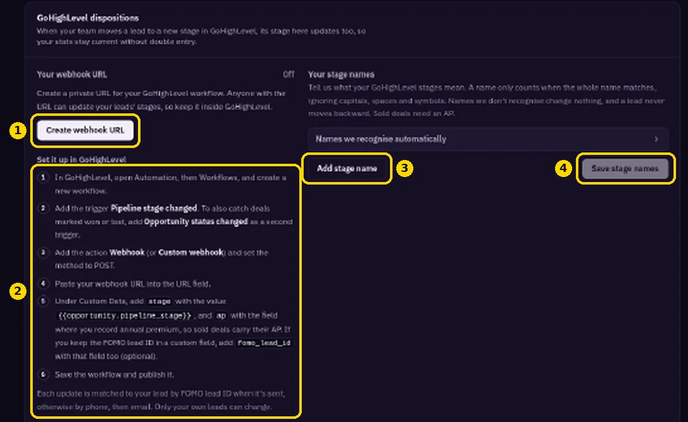
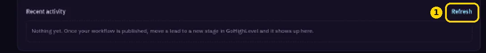

GoHighLevel Disposition Sync
Send your pipeline stages and AP from GoHighLevel back to Fomo Leads.
Sync your GoHighLevel pipeline stages back to Fomo Leads so your stats stay accurate.
In Fomo Leads
- Go to https://members.fomoleads.io/integrations and find GoHighLevel dispositions.
- Click Create webhook URL. This makes your private URL.

In GoHighLevel
- Open Automation > Workflows and create a workflow.
- Add the trigger Pipeline stage changed. Also add Opportunity status changed if you want won/lost to sync.
- Add a Webhook action and set the method to POST.
- Paste your Fomo Leads URL.
- Under Custom Data, add
stage={{opportunity.pipeline_stage}},ap, and optionallyfomo_lead_id. - Save and publish.
Match your stage names

Back in Fomo Leads, use Your stage names to map your GoHighLevel stages. Click Add stage name, then Save stage names. Check Recent activity and click Refresh to confirm updates are arriving.